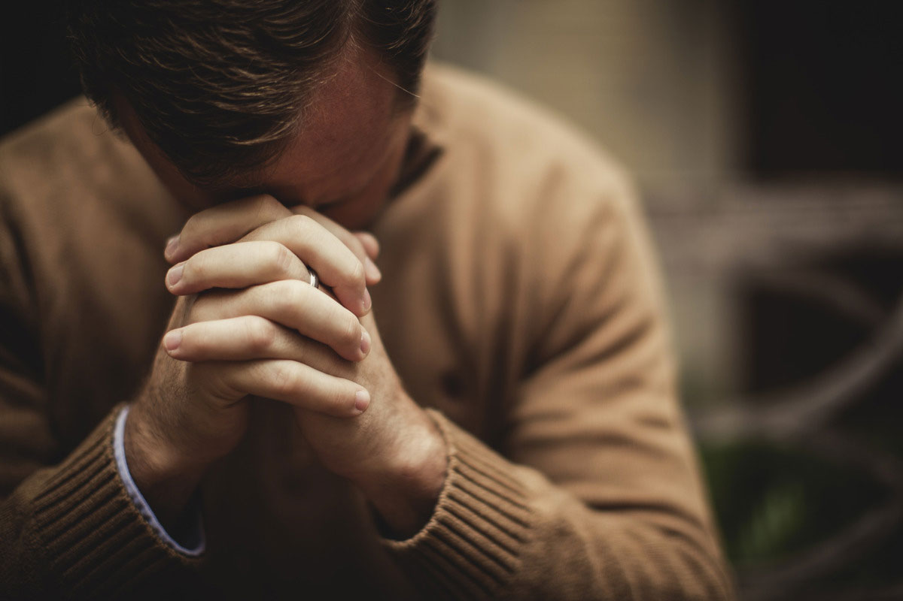
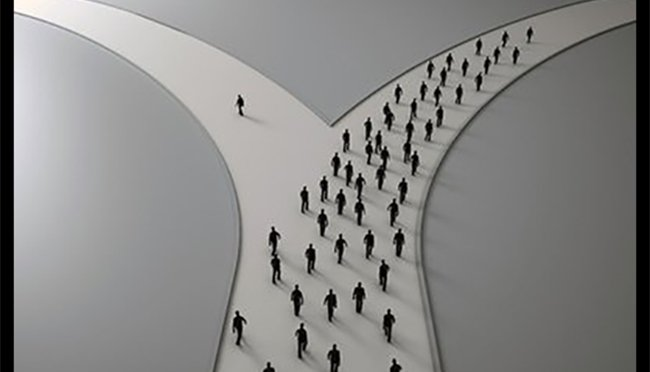
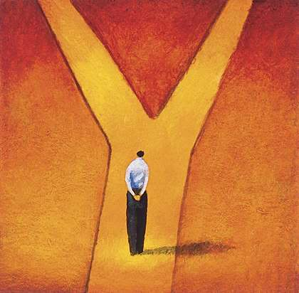
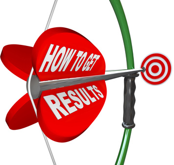

|  | Memulai sesuatu harus dengan doa dan keyakinan bahwa kita pasti berhasil |
|
Dan mungkin anda memiliki keinginan untuk langsung terjun kedunia kerja, tentunya anda harus memiliki beberapa persiapan yang matang, tingkatkan keahlianmu. |
||
Kita harus mulai berani menentukan tujuan hidup kita sendiri, tataplah kedepan jangan pernah melihat kebelakang, siap siap siap ... Jangan pernah menyerah karena apapun yang terjadi selalu ada jalan keluar. |
||
Adakalanya dalam hidup ini kita diperhadapkan pada sebuah pilihan, entah itu pilihan yang mudah ataupun sulit, pilihlah dengan penuh keyakinan. |
 | |
|  | Memang kesuksesan itu banyak sekali, Mereka akan keluar dari zona nyaman dan mencoba hal baru, Zona Nyaman Memang Melenakan, Tapi Segeralah Keluar dan Raih Masa Depan. |
|
ketika kita sudah menentukan pilihan, fokuslah pada sasaran anda. Sehingga anda mengetahui sasaran anda tersebut dengan lebih detail. |
 | |
Jangan Merangkak dalam Keraguan, Berlarilah dengan KEYAKINAN, Berlarilah sejauh yang kita bisa. Berlarilah mengejar mimpi, jangan pantang menyerah. Semua tinggal menunggu waktu, jangan berhenti dan teruslah lakukan yang terbaik untuk masa depan, tetaplah bermimpi dengan iringan perjuangan dan Doa, yakin siapa yang bersungguh-sungguh pasti akan diberikan hasil pencapaian terbaik. |
||
SUKSES sebenernya adalah yang memiliki manfaat untuk diri dan orang lain, keberhasilan yang telah dicapai selain sebagai tujuan mendapatkan pencapaian hasil terbaik kepada diri sendiri, akan lebih sempurna jika sukses yang diraih dapat menjadi inspirasi untuk banyak orang. Terimalah kesuksesan Anda. |